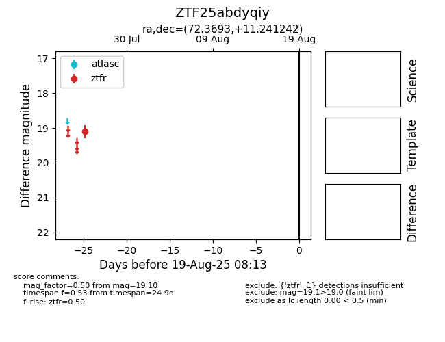

Target ZTF25abdyqiy at 2025-08-06 17:27, see:
FINK: fink-portal.org/ZTF25abdyqiy
Lasair: lasair-ztf.lsst.ac.uk/objects/ZTF25abdyqiy
ALeRCE: alerce.online/object/ZTF25abdyqiy
alt names
ZTF25abdyqiy (ztf,fink)
coordinates:
equatorial (ra, dec) = (72.3693,+11.24124)
galactic (l, b) = (187.5820,-20.73331)
photometry
last ztfr=19.10
1 ztfr detections
